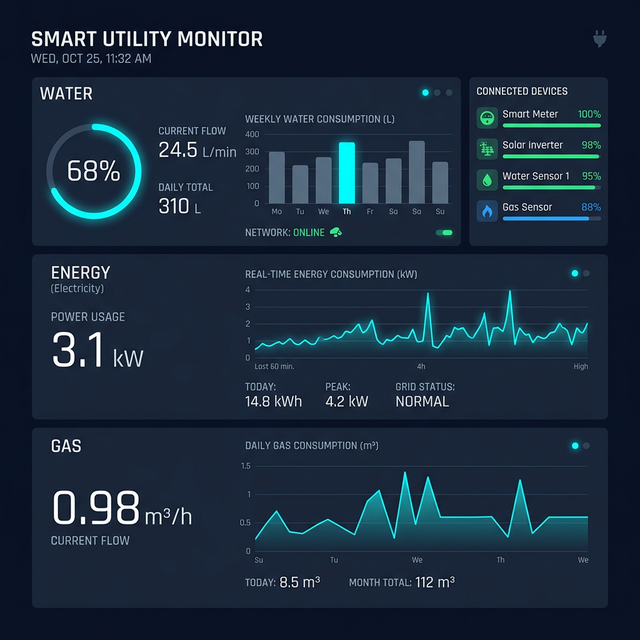

Com a tecnologia da Neometer, seu condomínio passa a monitorar em tempo real o consumo de recursos, reduz desperdícios e transforma informação em economia.
Tecnologia aplicada ao dia a dia do condomínio.

A maioria dos condomínios enfrenta os mesmos desafios. A falta de dados impede decisões inteligentes e gera conflitos entre moradores.
A Neometer nasceu para levar soluções avançadas de monitoramento e eficiência energética para condomínios residenciais. Nosso time ajudou empresas e indústrias a reduzirem milhões em custos operacionais.
Agora trazemos essa expertise para o ambiente condominial. Nosso propósito é dar ao síndico controle total sobre os recursos do prédio e permitir que moradores acompanhem seu próprio consumo com transparência.
Monitoramento em tempo real de água, energia e gás. Instalamos sensores inteligentes nos medidores existentes do prédio que captam dados de consumo e enviam para nossa plataforma digital.
Modernização do sistema de aquecimento do prédio. Substituímos sistemas tradicionais a gás por trocadores de calor elétricos de alta eficiência.
Segurança hídrica para o condomínio. Monitoramos em tempo real os níveis de cisternas e caixas d'água do prédio — nível de água, vazão e funcionamento das bombas.
Quando as soluções da Neometer trabalham juntas, o condomínio ganha um ecossistema completo de monitoramento e eficiência.
A Neometer oferece ao síndico ferramentas para administrar o condomínio de forma mais profissional.
Investimento inicial zero. Modelo de locação — a Neometer investe no equipamento, o condomínio paga apenas pelo serviço.
Acompanhe seu próprio consumo de recursos através da plataforma digital — sem surpresas na conta.
"Cada unidade paga exatamente pelo que consumiu. Sem estimativas. Sem arredondamentos. Sem erros."
As perguntas mais comuns sobre a Neometer e como funciona a instalação.
Mais controle. Mais transparência. Mais eficiência.
A Neometer transforma dados em economia real.